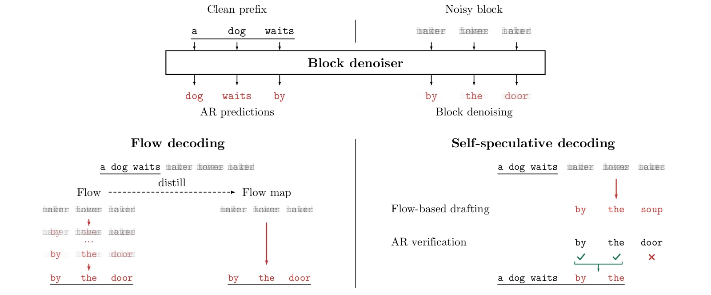
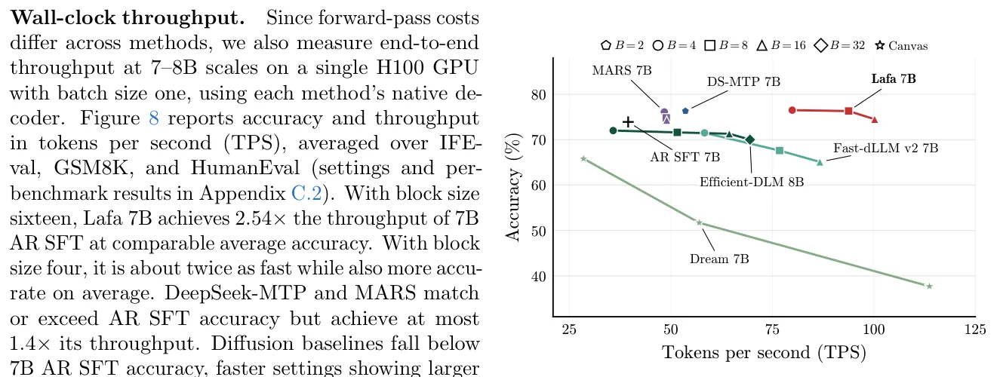
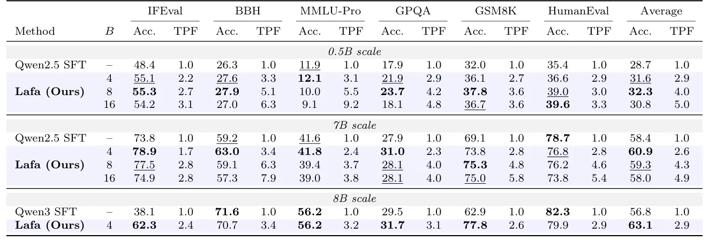

O Gargalo da Geração Sequencial
Os grandes modelos de linguagem (LLMs) atuais são predominantemente treinados como modelos autoregressivos (AR). Isso significa que eles predizem o próximo token com base no texto precedente. Embora essa abordagem seja eficiente para treinamento, graças à paralelização da arquitetura Transformer e ao uso de teacher forcing, a geração de texto é inerentemente sequencial. O modelo produz um token por forward pass, o que cria um gargalo significativo de latência durante a inferência, especialmente para sequências longas.
Alternativas para Geração Paralela
Para acelerar a inferência, pesquisas anteriores exploraram a geração paralela. Abordagens como Multi-Token Prediction (MTP), modelos de difusão discretos e modelos de linguagem baseados em fluxo contínuo buscam superar a limitação sequencial. Os modelos de difusão discretos tentam denoisar tokens diretamente, mas operam em espaços discretos, limitando o uso de técnicas avançadas de controle e aceleração desenvolvidas para imagens e vídeo. Já os modelos de fluxo contínuo operam em um espaço contínuo, permitindo integração numérica para gerar múltiplos tokens simultaneamente.
O Desafio de Escalar Modelos de Fluxo
Apesar do potencial, os modelos de fluxo de linguagem existentes foram demonstrados principalmente em escalas pequenas e tarefas simples. Tentativas anteriores de escalonamento identificaram desafios de ineficiência no treinamento. Técnicas eficazes para construir modelos de fluxo de linguagem performáticos na escala de bilhões de parâmetros ainda não estavam bem estabelecidas. Este trabalho apresenta o Lafa (Large flow language model), um modelo rápido e de alta performance escalado para 8B parâmetros de maneira eficiente em dados.

Arquitetura Blockwise Flow
O Lafa é um modelo de fluxo em blocos. A arquitetura combina atenção causal no prefixo do texto com fluxo bidirecional, mas enviesado da esquerda para a direita, dentro de cada bloco. Este design traz a arquitetura e o viés indutivo do Lafa para perto dos modelos AR, permitindo treinamento eficiente através da adaptação de modelos pré-treinados. A direção esquerda-direita do texto é respeitada, mas dentro de cada bloco, o fluxo assíncrono permite paralelismo.
Treinamento Eficiente com Adaptação AR
Os autores treinam o Lafa em escalas de 0.5B, 7B e 8B. Para isso, adaptam checkpoints pré-treinados de modelos AR (Qwen2.5 e Qwen3). O treinamento utiliza menos de 30B de tokens, o que é significativamente mais eficiente do que os orçamentos de treinamento relatados para modelos de difusão anteriores em escalas comparáveis. O Lafa aprende um denoiser de bloco para o fluxo, junto com previsão AR no prefixo. Esse treinamento conjunto preserva ou até melhora as capacidades AR pré-treinadas através de um efeito de previsão de múltiplos tokens.
Decodificação de Fluxo e Flow Maps
A inferência rápida é habilitada pelo prefix caching e pela decodificação de fluxo em bloco. A decodificação de fluxo integra um fluxo contínuo do ruído às representações de tokens. Os autores avaliam diferentes tamanhos de bloco (B=4, 8, 16) e passos de integração de Euler. Com passos suficientes, a precisão da decodificação de fluxo se aproxima ou supera a do modelo AR SFT. Além disso, o fluxo pode ser destilado em um 'flow map', permitindo geração em um ou poucos passos com precisão melhorada, embora ainda haja uma lacuna de qualidade em relação à decodificação de fluxo com mais passos de integração.
Decodificação Autosspeculativa Interna
Um dos pontos fortes do Lafa é a decodificação autosspeculativa. Como o treinamento de fluxo preserva as capacidades AR, o modelo pode usar seu próprio predictor AR para verificar rascunhos gerados pelo fluxo. O processo funciona da esquerda para a direita: o fluxo gera um rascunho de múltiplos tokens, e o componente AR verifica cada token. Se verificado, o token é aceito; caso contrário, é regenerado. Isso combina a velocidade da geração paralela do fluxo com a precisão da verificação autoregressiva.

Resultados de Performance
Os experimentos avaliam o Lafa em tarefas de instrução, raciocínio e codificação. Em escalas de 0.5B e 7B, o Lafa é comparado a métodos MTP, block-parallel decoding e difusão discreta. Os resultados mostram que o Lafa atinge qualidade comparável ou superior aos modelos AR SFT. Na decodificação autosspeculativa, o Lafa 7B alcança 2.54x o throughput do modelo AR SFT base, superando métodos de previsão de múltiplos tokens e difusão discreta. A eficiência é mantida mesmo com a verificação AR adicional.
Análise de Escala e Acurácia
Os autores analisam a precisão em diferentes configurações de bloco e passos de integração. Para o Lafa 7B, a decodificação de fluxo com bloco de tamanho 4 e passos suficientes de Euler supera a acurácia do AR SFT. A destilação para flow maps melhora a geração em um e dois passos, com ganhos maiores em 7B. No entanto, uma lacuna de qualidade permanece em relação à decodificação de fluxo com mais passos de integração, indicando que a destilação ainda pode ser aprimorada.
Limitações e Direções Futuras
Apesar dos avanços, o paper reconhece limitações. A destilação do flow map para geração em um passo ainda não incorpora totalmente o auto-condicionamento e a guia de prefixo, o que limita a precisão em regimes de poucos passos. Além disso, a comparação com baselines em escalas maiores (8B) usa checkpoints liberados por outros grupos, o que pode introduzir viés devido a diferentes conjuntos de dados e orçamentos de treinamento. Os autores deixam para trabalhos futuros a melhoria da destilação do flow map e a incorporação de técnicas avançadas de guia.

Conclusão
O Lafa demonstra que fluxos contínuos podem servir como uma base escalável para modelagem de linguagem. Ao adaptar modelos AR pré-treinados com menos de 30B tokens, o Lafa alcança 8B parâmetros com eficiência. A combinação de geração causal entre blocos e fluxo assíncrono dentro dos blocos permite paralelismo sem perder a capacidade de caching de prefixo. A decodificação autosspeculativa interna oferece um ganho prático de velocidade, provando que é possível equilibrar qualidade e throughput em modelos de linguagem de grande escala.
O que fica
- Lafa usa fluxo contínuo em blocos para gerar tokens em paralelo, superando o gargalo sequencial dos modelos autoregressivos tradicionais.
- A adaptação de modelos pré-treinados exige menos de 30B tokens, sendo mais eficiente que métodos de difusão discreta anteriores.
- A decodificação autosspeculativa interna permite verificar rascunhos gerados pelo fluxo usando o próprio modelo, acelerando a inferência em 2.54x.
Paper original: Large Flow Language Models
Comentários
Nenhum comentário ainda. Seja o primeiro.